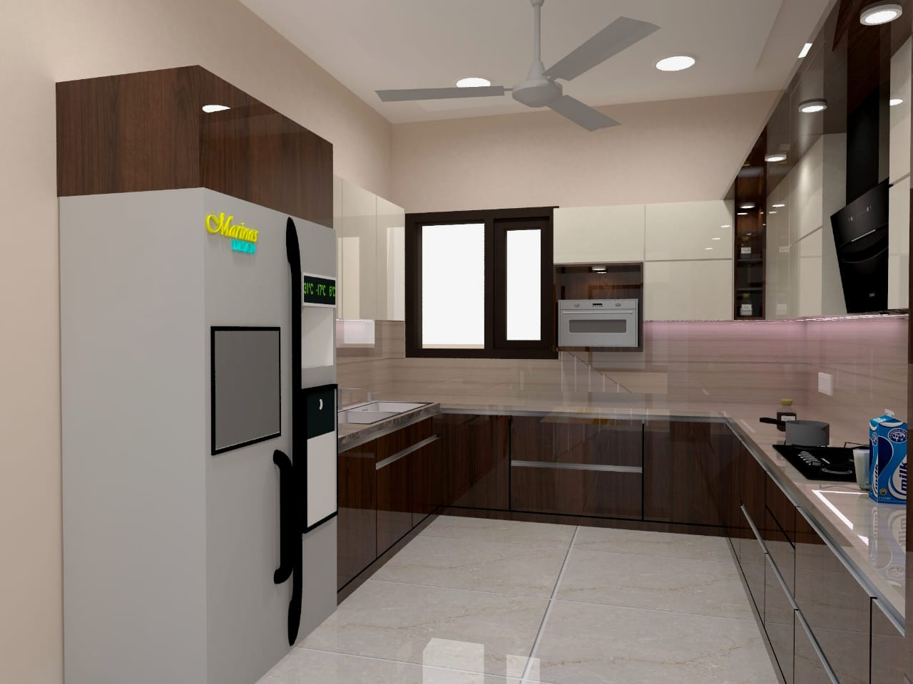
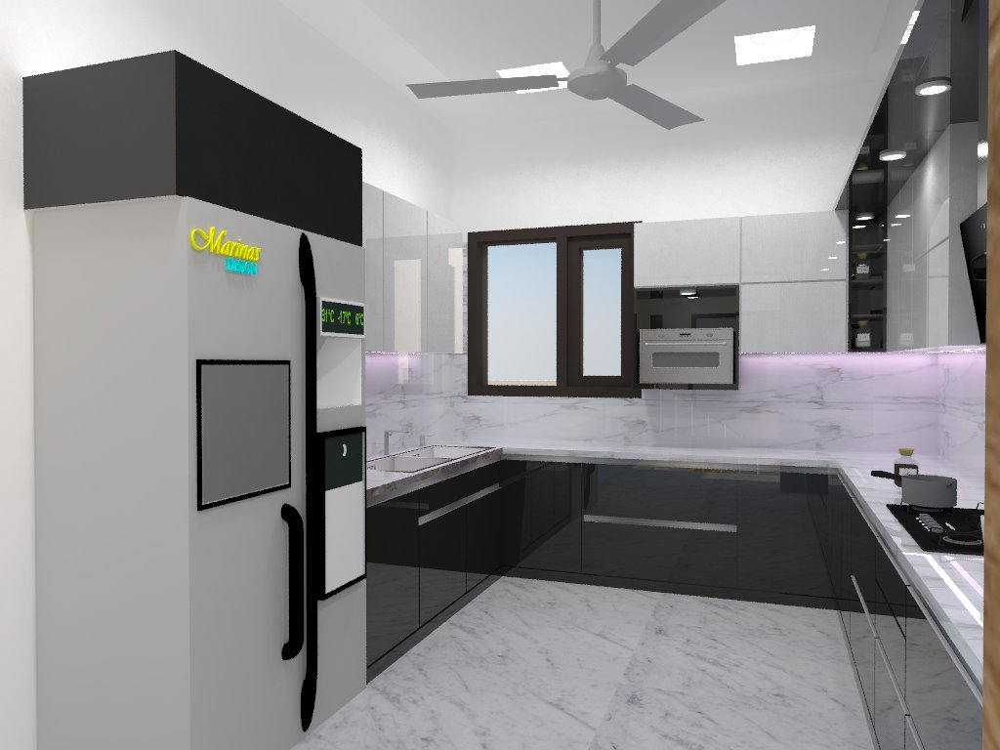
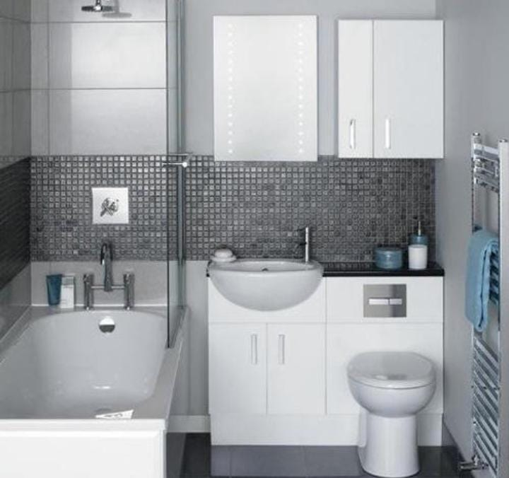

Architect,the art of technique and designing building, as distuingished from
the skills associate with
construction. the the practice of architecture is employeed to fulfil both practical and ex[pressive
requirements,
and thus it serves both utilitarian and aesthetic ends. although thes
etwo ends may be distingushed, they cannotand the be separatedand the relatibe weight given to each can vary
widely. because every society- setteled or nomadic- has a spatial relationship to the natural world and to other
socities , the strusture they produs=ce revel much about their environment history , ceremonies , and aristic
sensibility, as well as many aspects of daily life
we create interior, exterior designs of residential and commercial buildings. 2D,3D Planning ,
Elevation , Room
Interiors etc. We design the house of your dreams . Modular kitchen , Modular toilets with Modular material .
Exteriors
A Front elevation design is basically a part of as acenic designs which highlights the
scenic element or the entire
set as seen from the front view with or without measurements. Most of the front elevation designs shows the
measurements to get a better understanding with the building so that it can drafted or quickly drawn by Architect.
The front elevation of a home plan is a straight-on view of the huse as if ypu were looking at it from a perfectly
centered spot on the same plane as the house. Also called an "entry elevation," The front elevation of a home plan
shows features such as entery doors, windows, the front porch and any items that protude from the home, such as
side
porches or chimneys. However, side walls unless they will be built at an angle that is visible from the centered
front view.
Interiors
Bedroom
Try to scroll this section and look at the navigation bar while scrolling! Try to scroll this section and look
at
the navigation bar while scrolling!
Try to scroll this section and look at the navigation bar while scrolling! Try to scroll this section and look
at
the navigation bar while scrolling!
kitchen


A Front elevation design is basically a part of as acenic designs which highlights the
scenic element or the entire
set as seen from the front view with or without measurements. Most of the front elevation designs shows the
measurements to get a better understanding with the building so that it can drafted or quickly drawn by Architect.
The front elevation of a home plan is a straight-on view of the huse as if ypu were looking at it from a perfectly
centered spot on the same plane as the house. Also called an "entry elevation," The front elevation of a home plan
shows features such as entery doors, windows, the front porch and any items that protude from the home, such as
side
porches or chimneys. However, side walls unless they will be built at an angle that is visible from the centered
front view.
Bathroom

A Front elevation design is basically a part of as acenic designs which highlights the
scenic element or the entire
set as seen from the front view with or without measurements. Most of the front elevation designs shows the
measurements to get a better understanding with the building so that it can drafted or quickly drawn by Architect.
The front elevation of a home plan is a straight-on view of the huse as if ypu were looking at it from a perfectly
centered spot on the same plane as the house. Also called an "entry elevation," The front elevation of a home plan
shows features such as entery doors, windows, the front porch and any items that protude from the home, such as
side
porches or chimneys. However, side walls unless they will be built at an angle that is visible from the centered
front view.